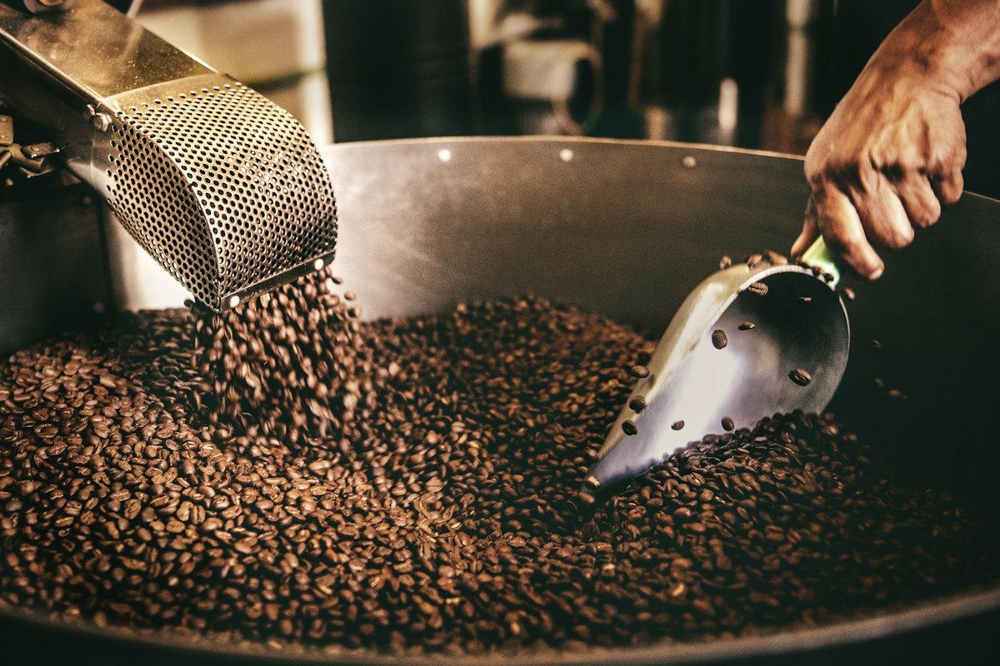
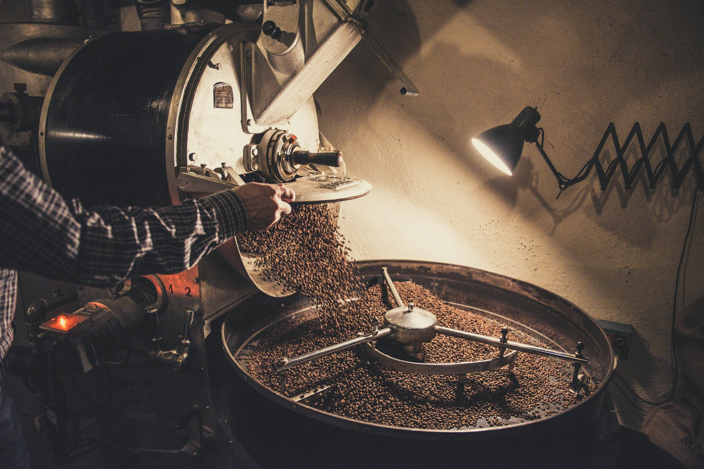

焙煎したての豆
少しずつ、丁寧に焙煎しています。

自家焙煎コーヒー豆 八王子・めじろ台
店主の伊丹は、銀座の珈琲店で14年にわたり焙煎と抽出にたずさわってきました。めじろ台で、自家焙煎のコーヒー豆を販売しています。
自家焙煎コーヒー豆 八王子・めじろ台
店主の伊丹は、銀座の珈琲店で14年にわたり焙煎と抽出にたずさわってきました。めじろ台で、自家焙煎のコーヒー豆を販売しています。
焙煎の度合い（イメージ）
生豆
3Dのイメージです
イタミコーヒーは、産地にこだわっています。厳選の生豆を仕入れ、焙煎にこだわって、おいしいコーヒーをお届けします。
メール・FAX・電話での通信販売で、全国にお届けしています。

少しずつ、丁寧に焙煎しています。
産地にこだわって、生豆を仕入れています。
メール・FAX・電話で、全国へ。
…
| 営業時間 | 10:00〜18:00 |
|---|---|
| 定休日 | 日曜日 |
ご注文は、メール・FAX・お電話で承ります。